Generazione e pubblicazione delle classifiche¶
Classifiche TV / online¶
Le classifiche per le TV mostrate al centro gara dei TMO e le classifiche online pubblicate sul sito PicoEvents aggiornate in tempo reale sono ottenute tramite un'unica classifica esportata a intervalli regolari. Questa classifica viene pubblicata durante la gara, quando non tutti i concorrenti sono giunti all'arrivo.
In caso di problemi con la rete internet o con le TV, come alternativa le classifiche vengono stampate a intervalli regolari e appese al centro gara. La relativa procedura è descritta più sotto.
Usa le classifiche con tempi intermedi
Il sito PicoEvents supporta sia le classifiche provvisorie che quelle con tempi intermedi. La procedura descritta è la stessa, ma caricando i tempi intermedi è possibile visualizzare gli intertempi e relativi grafici già dopo la partenza dell'ultimo concorrente.
I file saranno più grandi sollecitando maggiormente la rete, ma questi aspetti non dovrebbero causare problemi.
- Nel menu
ClassificheselezionaTempi intermedi > Categorie.
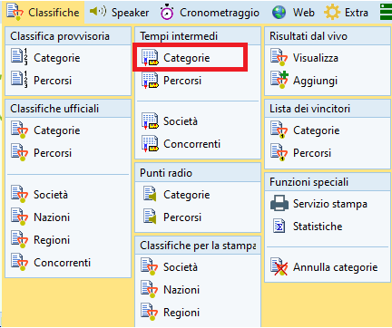 - Nelle
Impostazionia sinistra, nella sezioneClassifica, seleziona tutti i concorrenti, ma senza i non partiti.
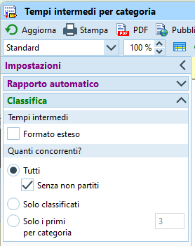 - Seleziona le categorie da esportare nel pannello di selezione in basso (di regola tutte).
- Assicurati che i tempi siano mostrati nel formato
OO:MM:SS.
Altrimenti, imposta il formato nel menuingranaggioin alto a destra. -
In caso di modifiche alle impostazioni, aggiorna le classifiche. 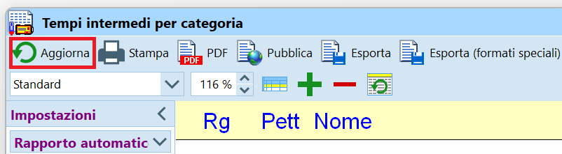
-
Utilizza il
Nome ORWaredella gara impostato suPicoEvents.- Se non hai ancora una gara su
PicoEvents, creala seguendo le istruzioni in Software > Analisi > PicoEvents > Creazione gara
- Se non hai ancora una gara su
-
Nella finestra della classifica in OE12, nelle
Impostazionia sinistra, nella sezioneRapporto automatico
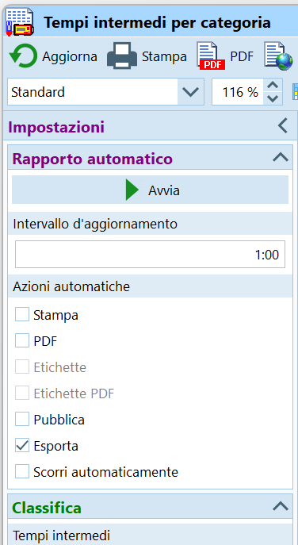- Imposta l'intervallo di aggiornamento a
1:00minuto. - Imposta
Esportacome azione automatica. - Nota: se stai esportando le classifiche provvisorie, non impostare l'opzione
Solo categorie modificate. - Premi su
Avvia.
- Imposta l'intervallo di aggiornamento a
-
Nel dialogo di esportazione (appare solo la prima volta)
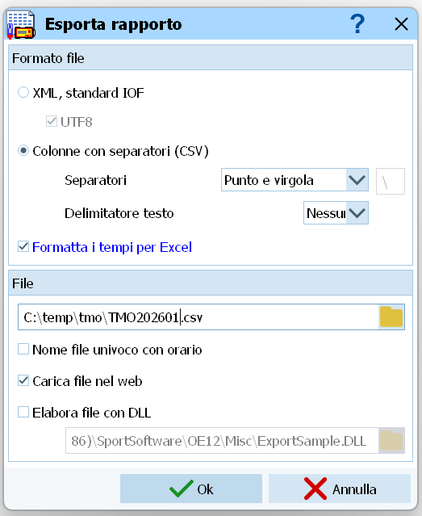- Imposta
Colonne con separatori (CSV). - Imposta separatore
Punto e virgola. - Imposta delimitatore testo
Nessuno. - Seleziona
Formatta i tempi per Excel. - Esporta il file nella cartella
C:\Temp\tmo\<anno>). - Imposta il nome del file a
<FTP-Token>.csv.- Es.
C:\Temp\tmo\2023\XDRIZRPK.csv
- Es.
NONimpostareNome file univoco con orario.- Imposta
Carica file nel web. - Non impostare
Elabora file con DLL. - Premi
Ok.
- Imposta
-
Nel dialogo
Carica file nel web

- Imposta il sito web
ftp.asti-ticino.ch - Imposta la cartella
/ - Non attivare la connessione sicura SSL/TLS
- Imposta il nome utente
co.classifiche@asti-ticino.ch - Imposta la password
class1f1che - Premi
Carica.
- Imposta il sito web
-
Attendi uno-due minuti e verifica le classifiche in internet (sito results.picoevents.ch)
Classifiche provvisorie¶
Le classifiche provvisorie sono classifiche pubblicate durante la gara, quando non tutti i concorrenti sono giunti all'arrivo. Nella testata di ogni categoria vengono indicati il numero di concorrenti arrivati rispetto al numero di concorrenti iscritti (ad es. (13/18)).
Ai TMO, queste classifiche vengono di regola mostrate sulle TV al centro gara e caricate in internet sul sito PicoEvents.
Come alternativa in caso di problemi con le TV vengono stampate a intervalli regolari e appese al centro gara.
- Nel menu
ClassificheselezionaClassifica provvisoria > Categorie.
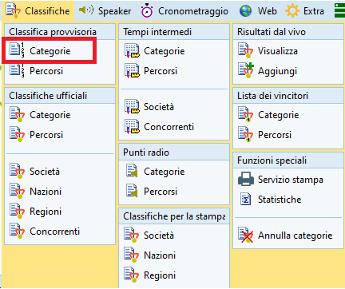 - Nel menu a tendina in alto, seleziona
TMOcome modello del rapporto.
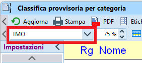 - Nelle
Impostazionia sinistra, nella sezioneClassifica, seleziona tutti i concorrenti, ma senza i non partiti.
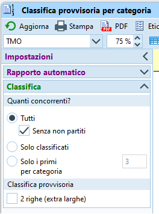 - Seleziona le categorie da stampare nel pannello di selezione in basso (di regola tutte).
- Assicurati che i tempi siano mostrati nel formato
OO:MM:SS.
Altrimenti, imposta il formato nel menuingranaggioin alto a destra. - In caso di modifiche alle impostazioni, aggiorna le classifiche.

Scegli se stampare una singola copia o se stampare automaticamente a intervalli regolari.
-
Stampa a intervalli regolari
- Nelle
Impostazionia sinistra, nella sezioneRapporto automatico
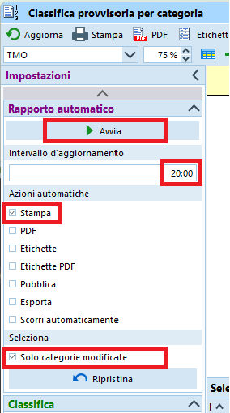- Imposta l'intervallo di aggiornamento a
20:00o30:00minuti. - Imposta
Stampacome azione automatica. - Seleziona
Solo categorie modificate. - Premi su
Avvia.
- Imposta l'intervallo di aggiornamento a
- Nel dialogo di stampa (appare solo alla prima stampa)
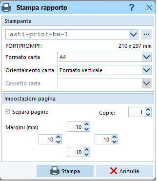- Imposta la stampante.
- Imposta il formato della carta A4 verticale.
- Imposta
separa pagine. - Imposta i margini (10 sui 4 lati).
- Premi
Stampa.
- Non chiudere la finestra.
Chiudendo la finestra, la stampa automatica si interrompe e alla prossima apertura bisogna ristampare tutte le categorie.
- Nelle
-
Stampa singola copia
- Seleziona
Stampanella barra in alto.
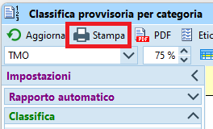 - Nel dialogo di stampa
- Imposta la stampante.
- Imposta il formato della carta A4 verticale.
- Imposta
separa pagine. - Imposta i margini (10 sui 4 lati).
- Premi
Stampa.
- Seleziona
Classifiche finali¶
Per le classifiche finali, assicurati che tutti i concorrenti sono arrivati, hai fatto tutte le verifiche necessarie (anche i partiti in anticipo) e hai corretto gli stati di non classifica.
Verifica se ti serve veramente la stampa di questa classifica. Storicamente serviva quasi esclusivamente come copia data ai giornalisti e per la premiazione. Attualmente, i giornalisti accedono alle classifiche online e la premiazione viene fatta con la classifica sul tablet (vedi la sezione TMS).
- Nel menu
Classifiche, selezionaClassifiche Ufficiali > Categorie. 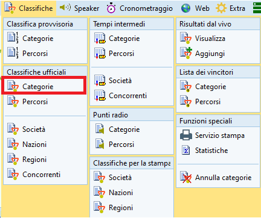 - Seleziona il rapporto
TMO.
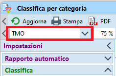 - Nelle
Impostazionia sinistra, nella sezioneClassifica, seleziona tutti i concorrenti, ma senza i non partiti.
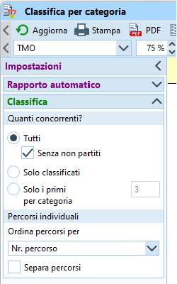 - Seleziona le categorie da stampare nel pannello di selezione in basso (di regola tutte).
- Assicurati che i tempi siano mostrati nel formato
OO:MM:SS.
Altrimenti, imposta il formato nel menuingranaggioin alto a destra. - In caso di modifiche alle impostazioni, aggiorna le classifiche. 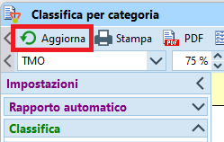
- Seleziona
Stampanella barra in alto.
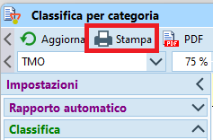 - Nel dialogo di stampa
- Imposta la stampante.
- Imposta il formato della carta A4 verticale.
- Imposta
separa pagine. - Imposta i margini (10 sui 4 lati).
- Premi
Stampa.
Esportazione classifiche¶
Esporta le classifiche in file CSV da utilizzare per le classifiche TMS, per il sito SOLV (Swiss Orienteering), per il sito ASTi (classifiche annuali), per RouteGadget e per Livelox.
- Assicurati di aver controllato i concorrenti partiti in anticipo.
- Nel menu
Classifiche, selezionaTempi intermedi > Categorie.
- Nelle
Impostazionia sinistra, nella sezioneClassifica, seleziona tutti i concorrenti, ma senza i non partiti.
- Seleziona le categorie da esportare nel pannello di selezione in basso (di regola tutte).
- Seleziona
Esporta.
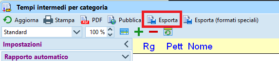 -
Nel dialogo di esportazione
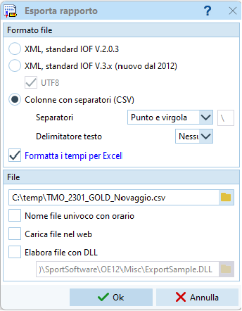- Imposta
Colonne con separatori (CSV). - Imposta separatore
Punto e virgola. - Imposta delimitatore testo
Nessuno. - Seleziona
Formatta i tempi per Excel. - Imposta il nome e la cartella di destinazione del file.
-
Imposta il nome del file nel formato
classificaTMO_AANN_SOCIETA_LUOGO_XXanalogamente a quanto fatto per la cartella della gara (in Creazione gara), dove
AAè l'anno a due cifre
NNè il numero della gara a due cifre
SOCIETAè la sigla della società
LUOGOè il posto della gara
_XXè un suffisso opzionale per gare speciali (ad es. _CTCO)Esempi: classificaTMO_2301_GOLD_Novaggio per il primo TMO del 2023 a Novaggio organizzato dal GOLD classificaTMO_2309_GOV_Cimalmotto_CTCO per i campionati ticinesi, nono TMO del 2023 organizzato dal GOV a CimalmottoPer gare speciali usa
classificaGARA_AA, es.classificaStaffettaSele_23per la gara del 2023.Questo file va poi mandato ai responsabili delle classifiche SOLV, TMO, TMS e RouteGadget/Livelox, per cui riconoscere dal nome del file di che gara si tratta è un bell'aiuto.
-
Non impostare
Nome file univoco con orario. - Non impostare
Carica file nel web. - Non impostare
Elabora file con DLL. - Premi
Ok.
- Imposta
Classifiche TMS / Premiazione¶
Crea e stampa la classifica per il Trofeo Miglior Società ticinese (TMS).
- Lancia il programma TMS (doppio click sull'icona sul desktop del PC server ASTi)
- Appare la finestra con le istruzioni su come esportare i dati da OL-Einzel.
PremiOK.
Nota: ignora la versione di OL-Einzel...
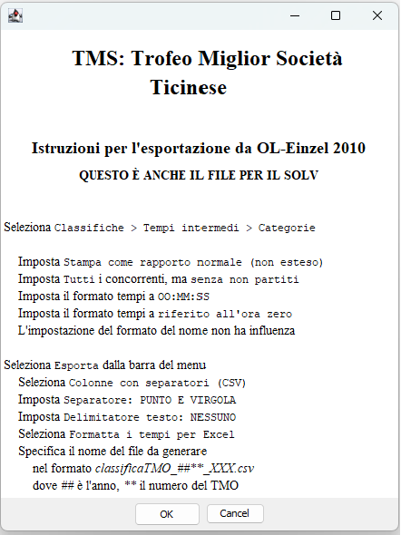 - Nella finestra delle impostazioni, seleziona il file esportato in Esportazione classifiche.
Nota: i campi Gara, Luogo e Data sono utilizzati nell'intestazione della classifica.
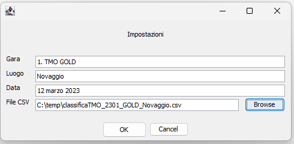 - Appare una finestra con tre tab: una con la classifica TMS, l'altra con la classifica di tutte le categorie e i punti assegnati ad ogni concorrente, e una con la classifica per la premiazione.
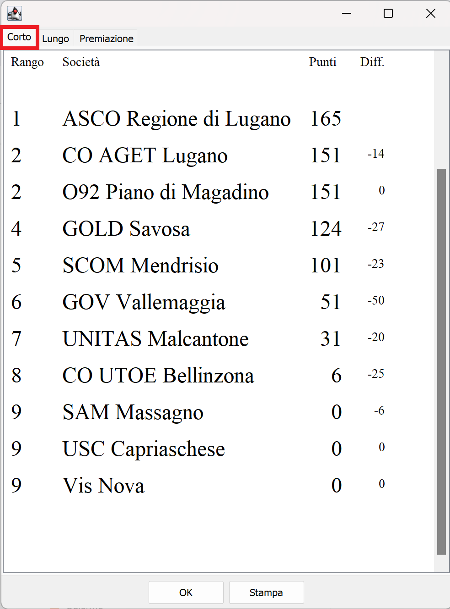 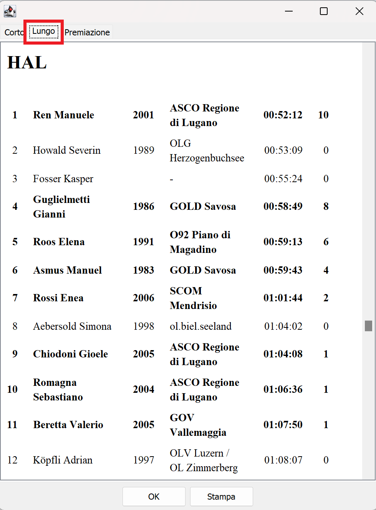
Nota: la classifica per la premiazione ha elementi dinamici che non funzionano in questa app. Ad esempio vengono mostrati sempre tutti i concorrenti, e i bottoniEspandinon funzionano. Basta aprire il file generato in un browser per vedere la pagina correttamente. 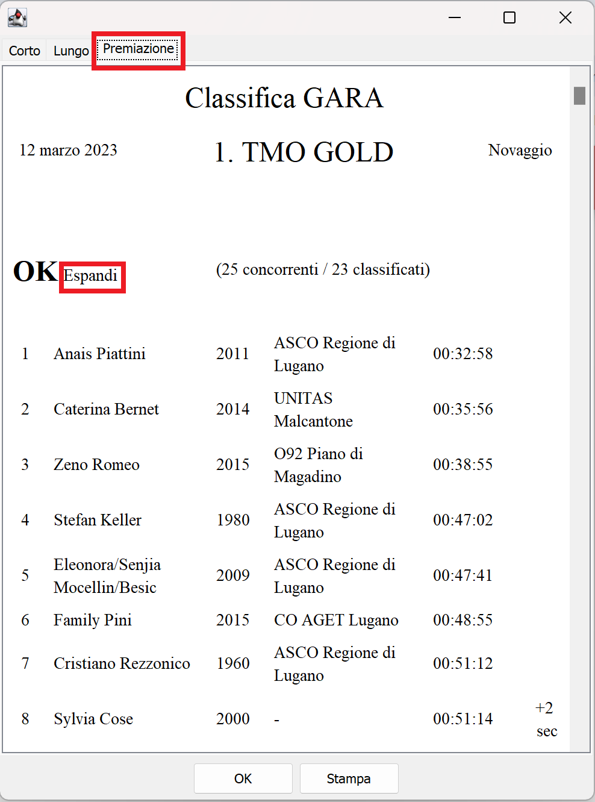 -
Se usi il tablet per la premiazione:
- Il programma ha copiato automaticamente il file sul server della documentazione.
- Sul tablet, apri il web browser
Edge(l'icona si trova sul desktop). - Dalla barra dei link salvati, seleziona
Premiazione. - Assicurati che il file sia quello della gara attuale e non quello della gara precedente preso dalla cache del browser (controlla i dettagli in cima alla pagina).
- La classifica mostra le categorie nell'ordine usato solitamente per la premiazione (es. OK, D10, H10, D12, H12, .... DAL, HAL) seguite dalla classifica TMS.
- Vengono mostrati alcuni commenti a fianco dei concorrenti per permettere qualche commento supplementare a chi legge le classifiche.
- Indicazione a livello di categoria se ci sono tanti non-classificati.
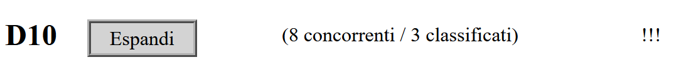 - Parimerito
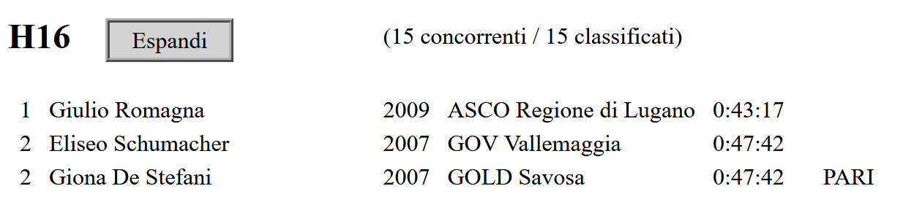 - Distacchi minimi tra i concorrenti sul podio.
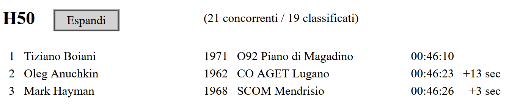 - Distacco minimo tra il terzo e il quarto posto (giù dal podio per un soffio).
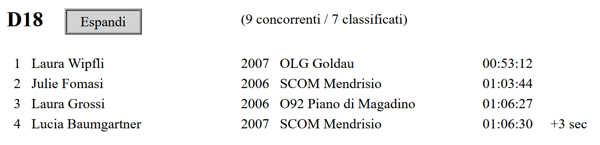 - Se sul podio ci sono solo concorrenti non ticinesi, viene mostrato anche il primo ticinese.
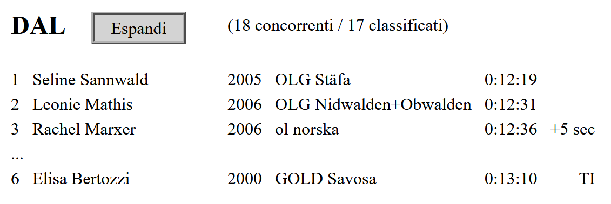
- Indicazione a livello di categoria se ci sono tanti non-classificati.
- Ogni categoria ha un bottone
Espandiper vedere la classifica completa, rispettivamenteComprimiper tornare alla visualizzazione minima del podio.
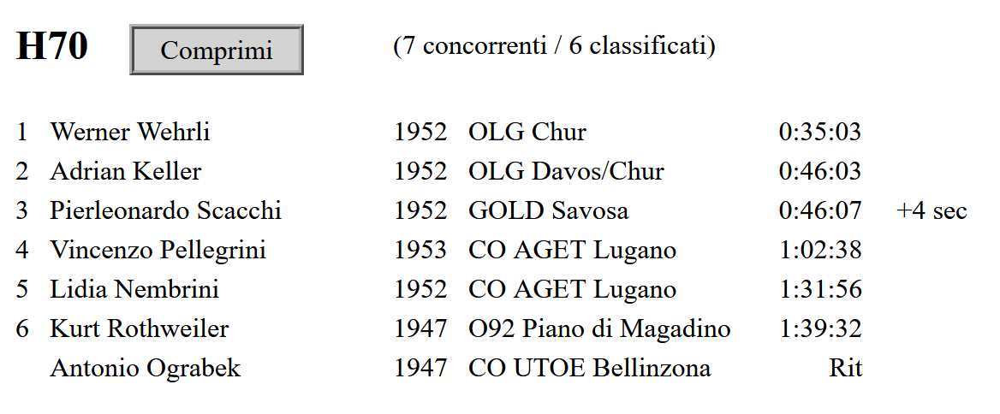
-
Se non usi il tablet per la premiazione, ma la versione stampata su carta:
- Seleziona il tab
Corto. - Premi
Stampa.
Nota: assicurati di selezionare la stampante A4.
- Seleziona il tab
Nota
Il programma genera tre file HTML nella cartella in cui si trova il file CSV delle classifiche.
I quattro file vanno spediti al responsabile delle classifiche TMS (vedi Classifiche ASTi).
Pubblicazione SOLV¶
Pubblica la classifica sul sito della federazione svizzera (Swiss Orienteering / SOLV).
- Caricare il file CSV in internet, all’indirizzo Classifiche sul sito SOLV.
Nota: questa è la normale pagina usata per accedere alle classifiche. - Accedi al formulario per il caricamento delle classifiche cliccando sul link
Webformulanella seziona per gli organizzatori (Veranstalter).
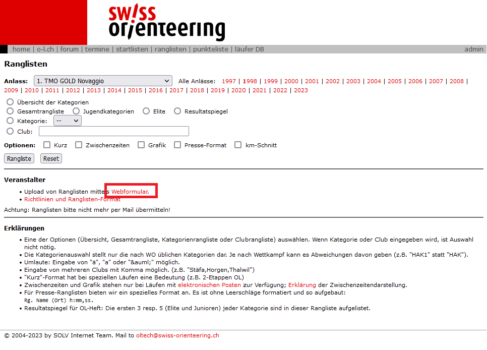 - Seleziona la gara e premi
Weiter.
Nota: sono selezionabili solo le gare più recenti.
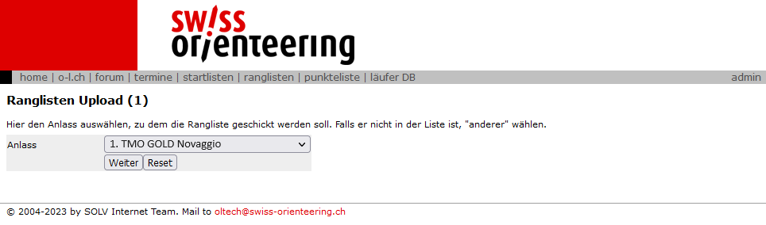 -
Riempi i campi del formulario e poi premi
Abschicken.Immagine d'esempio di un formulario riempito
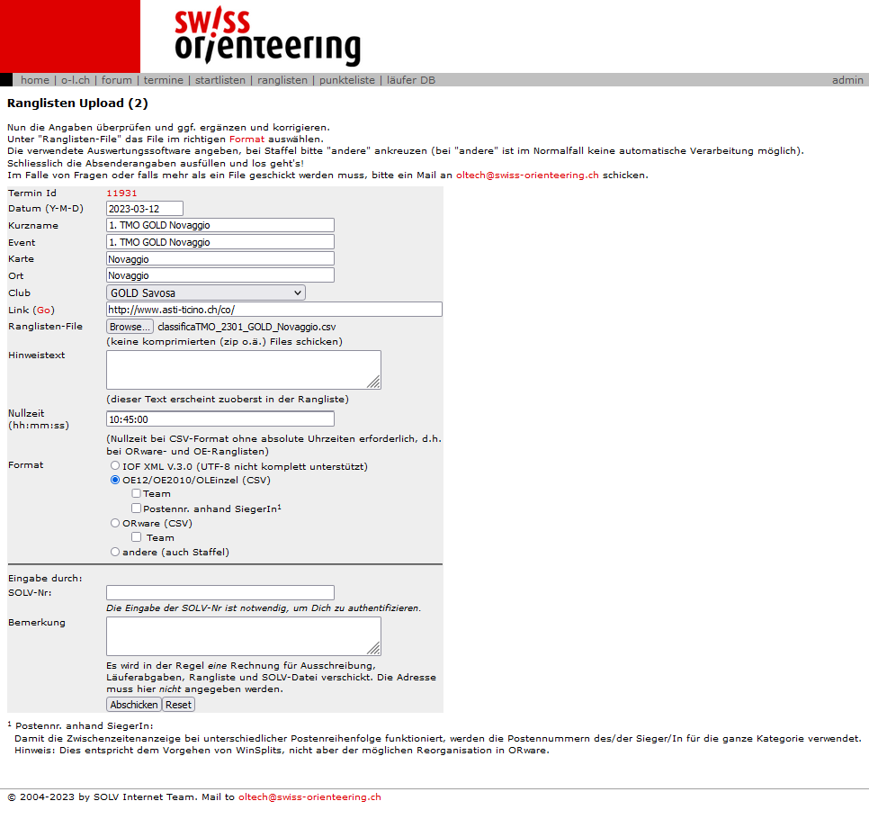
- Nel campo
Ranglisten-Fileseleziona il file delle classifiche esportato in Esportazione classifiche. - Nel campo
Nullzeitimposta l'ora zero come impostata nella gara (vediGara > Impostazioni). - Il testo nel campo
Hinweistextappare in cima alla classifica di ogni categoria. Questo è utile per comunicare ad esempio delle decisioni della giuria. - Nel campo
formatselezionaOE12/OE2010/OLEinzel (CSV). - Se la gara aveva percorsi individuali (ad es. farfalle) e la sequenza dei punti non era la stessa per tutti i concorrenti di una categoria, seleziona
Postennr. anhand SiegerIn.
Nota: imposta questa opzione anche se i percorsi individuali concernono poche o una sola categoria.
Nota: i grafici dei tempi intermedi saranno adattati alla sequenza dei punti del vincitore. - Nel campo
Eingabe durch: SOLV-Nr:immetti il tuo numero SOLV. - Il testo nel campo
Bemerkungè visibile solo ai gestori del sito SOLV.
Nota: puoi caricare la classifica più volte, ad esempio dopo una correzione. Tuttavia, puoi pubblicare autonomamente solo la prima versione. Dalla seconda classifica in poi devono intervenire i webmaster, per cui questo campo è utile per spiegare loro il motivo del caricamento supplementare.
- Nel campo
-
La prossima finestra mostra un breve testo e un link per testare le classifiche.
- Verifica la correttezza di varie categorie, soprattutto quelle dove ci stti dei problemi.
- Visualizza i tempi intermedi e i grafici di alcuni concorrenti, se possibile usando i dati di qualche concorrente presente che può giudicare se il grafico potrebbe corrispondere alla sua gara.
- Se tutto è ok, conferma cliccando su
Freischaltene immettendo il tuo numero SOLV.
Classifiche ASTi¶
Per l’allestimento e pubblicazione delle classifiche annuali TMO, SprintCup e TMS, come pure per il controllo dei punti del TMS, spedire i file ai responsabili ASTi.
- Spedire per e-mail i seguenti file all'indirizzo co.classifiche@asti-ticino.ch.
- Il file delle classifiche esportato in Esportazione classifiche.
- I due file TMS generati in Classifiche TMS.
- Il file dei percorsi OCAD importato in Creazione gara.
- Il file OCAD della cartina.